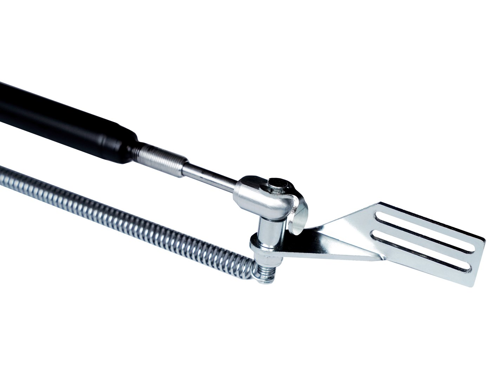
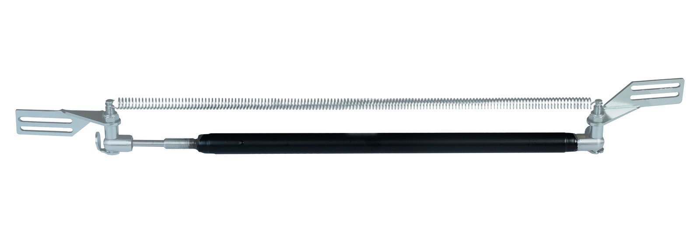
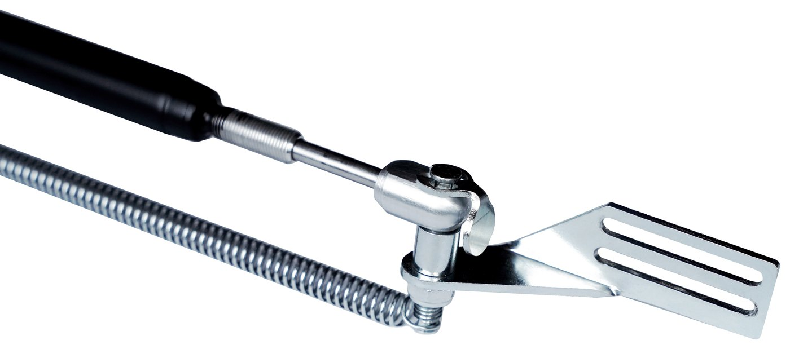
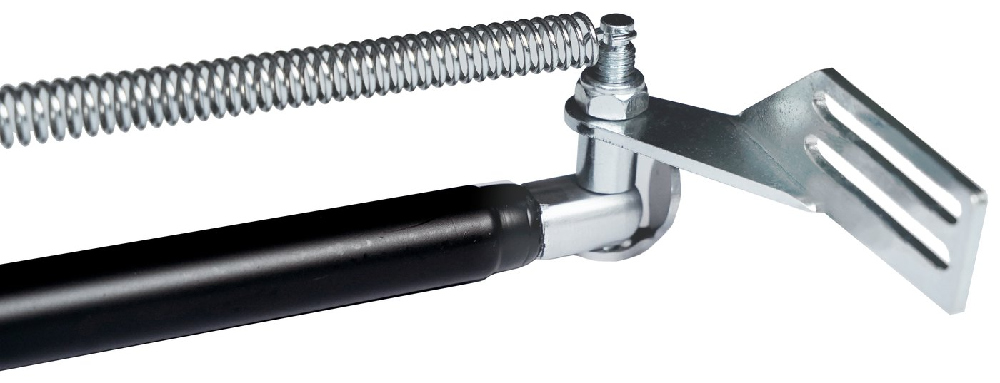
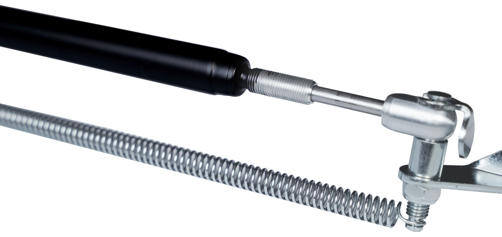

Automatický otvírač dveří
Pro skleníkové dveře a velké větrací otvory. Otevírá až do 90°.

Otvírač dveří pracuje na stejném principu jako otvírač oken, se silnějším válcem a delším zdvihem. Reaguje mezi 18 °C a 35 °C: dveře otevírá, když se skleník ohřívá, a zavírá je, když teplota klesá.
Se silou až 30 kg a zdvihem 110 mm otevírá dveře až do 90°, což v horkých dnech dává nejrychlejší odvod tepla. Je určen pro těžší dveře a větší otvory, kde by otvírač oken nestačil.
Konstrukce z pozinkované oceli pro dlouhé venkovní použití. Rychlá montáž na většinu rámů skleníkových dveří. Záruka výrobce 2 roky.
Technické parametry
| Síla | až 30 kg |
|---|---|
| Maximální otevření | 90° |
| Zdvih válce | 110 mm |
| Pracovní rozsah | 18–35 °C |
| Napájení | žádné, tepelně poháněný válec |
| Materiál | pozinkovaná ocel |
| Záruka | 2 roky |
Hlavní vlastnosti
Otevírá až do 90°
Plné otevření pro maximální průtok vzduchu.
Síla 30 kg
Pro těžší dveře a větší otvory.
Rozsah 18–35 °C
Širší rozsah pro teplejší podnebí a velké objemy.
Pozinkovaná ocel
Stabilní výkon sezónu za sezónou.
Pohledy na produkt




Vyzkoušejte, než objednáte.
Distributorům a výrobcům skleníků posíláme bezplatnou vzorkovou sadu. Namontujte ji, nechte ji projít sezónou a pak se domluvíme přímo na množství a cenách.
Další produkty

Automatický otvírač oken
Tepelně poháněný otvírač pro střešní a boční okna skleníků. Dvouramenný pružinový mechanismus, montáž Easy Clip. K dispozici v pozinkovaném a černém provedení.
Podrobnosti
Náhradní válec
Univerzální tepelně poháněný válec pasující na každý automatický otvírač. Hliníkové tělo, nerezový píst.
Podrobnosti